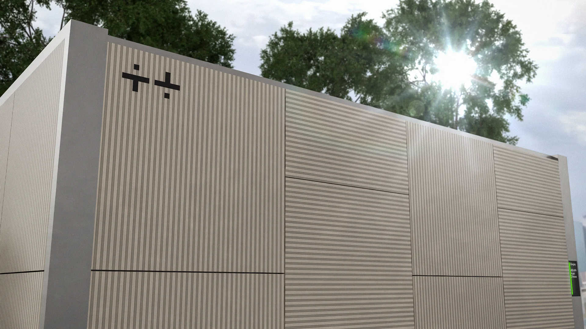
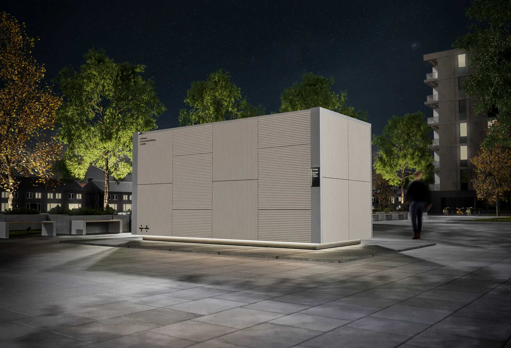

CoPower – Intelligent Energilagring & Ladeinfrastruktur
Vi opdaterer i øjeblikket vores digitale platform for at afspejle vores nyeste projekter og teknologiske løsninger.
CoPower udvikler, etablerer og driver bynære batteriløsninger (BESS), der fungerer som knudepunkt mellem elnettet og fremtidens transportbehov.
Vores mission er at levere højeffektiv opladning, lokal fleksibilitet og forsyningssikkerhed gennem intelligent styring af energi. Vi udnytter batteriets kapacitet til at muliggøre lynhurtig opladning, selv i områder med begrænset netkapacitet.
Vores fokusområder:
Energy Storage Systems (BESS): Etablering af 1-5 MWh batterianlæg i bynære miljøer.
High Power Charging: Lynladning til elbiler og tung erhvervstransport, understøttet af batteri-buffer for maksimal effekt.
Systemydelser: Levering af frekvensregulering og balance til Energinet.
Lokal Optimering: Peak-shaving, tarif-optimering og nødstrøm til virksomheder.
Intelligent Styring: Proprietær software til optimering af drift på tværs af markeder.

Kontakt os på mail info@copower.dk